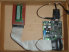
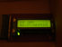
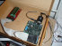
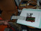

DSP 2009 - Audio Fingerprint
Daniel Aicardi - Edgardo Vaz - Melina Rabinovich
Audio Fingerprint



La idea del proyecto es identificar señales de audio de forma única, en este caso a partir de su huella característica.
Se inyecta una señal al DSP. Se halla la huella (*) de dicha señal. Se compara contra una base de datos de huellas pre-cargada en memoria. Se desplega el mensaje que corresponda en el display.